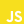
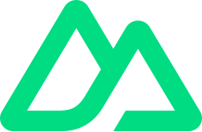
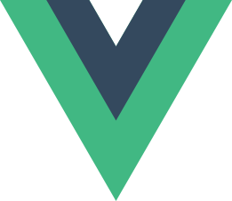
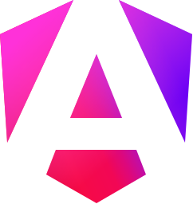
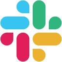
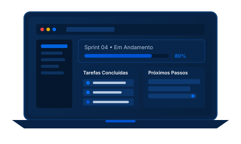

Software sob medida
para a realidade do seu negócio.
Desenvolvemos sistemas personalizados com escopo claro, arquitetura sólida e evolução estruturada — do entendimento do problema à entrega e continuidade da solução.

React
 Tailwind
Tailwind

JavaScriptTailwind

Nuxt VS Code
Vue
Angular Figma Claude ChatGPT
Slack
Software sob medida x pronto
Software sob medida para resolver, problemas reais da operação.
Quando sistemas prontos não atendem a operação, o software sob medida permite construir uma solução alinhada aos processos, integrações e objetivos específicos da empresa.
Ferramentas de prateleira forçam sua empresa a adaptar processos em vez de apoiar o crescimento. Criamos arquiteturas moldadas ao fluxo operacional da sua equipe.
Negócios ágeis mudam rápido. Nossa metodologia em sprints permite repriorizar funcionalidades com transparência de custos e prazos em cada etapa.
Validações contínuas, testes automatizados e prototipagem prévia eliminam retrabalhos caros e garantem entregas confiáveis desde a primeira sprint.
Nossa equipe fala a língua do seu negócio. Traduzimos metas comerciais em especificações técnicas precisas e métricas reais de resultado.
Do problema à evolução da solução
01
Entendimento real do problema
02
Arquitetura e validações
03
Construção e evolução
Fluxo iterativo com validações técnicas contínuas em cada ciclo de entrega.
QUEM SOMOS / FSU
As pessoas por trás do código.
Conheça os desenvolvedores da Fábrica de Software. Passe o cursor, toque ou use o teclado para explorar cada perfil.
Como trabalhamos
O que está incluído em um projeto com a FSU
Além do desenvolvimento, o projeto inclui acompanhamento técnico, validações contínuas, documentação e visibilidade sobre a evolução da solução.
Decisões técnicas alinhadas ao negócio
A solução é definida a partir do problema, da operação e dos objetivos da empresa — não apenas da tecnologia.
Entrega com previsibilidade
Você acompanha o que está em andamento, o que foi entregue e o que virá no próximo período do projeto.
Comunicação direta
Contato próximo com o time técnico para esclarecer dúvidas, validar entregas e manter o projeto alinhado.
Qualidade como parte do processo
Testes, revisões e validações acontecem durante o desenvolvimento, reduzindo problemas acumulados para o final.
Gestão de risco e continuidade
Documentação, compartilhamento de conhecimento e organização técnica reduzem dependência de pessoas e facilitam a continuidade do projeto.
Visibilidade do progresso
Você acompanha entregas, itens em andamento, próximos passos e pontos de atenção ao longo de todo o ciclo.

Vamos tirar seu projeto do papel?
Agende uma conversa de 30 minutos sem compromisso para avaliarmos juntos o melhor caminho para o seu sistema.